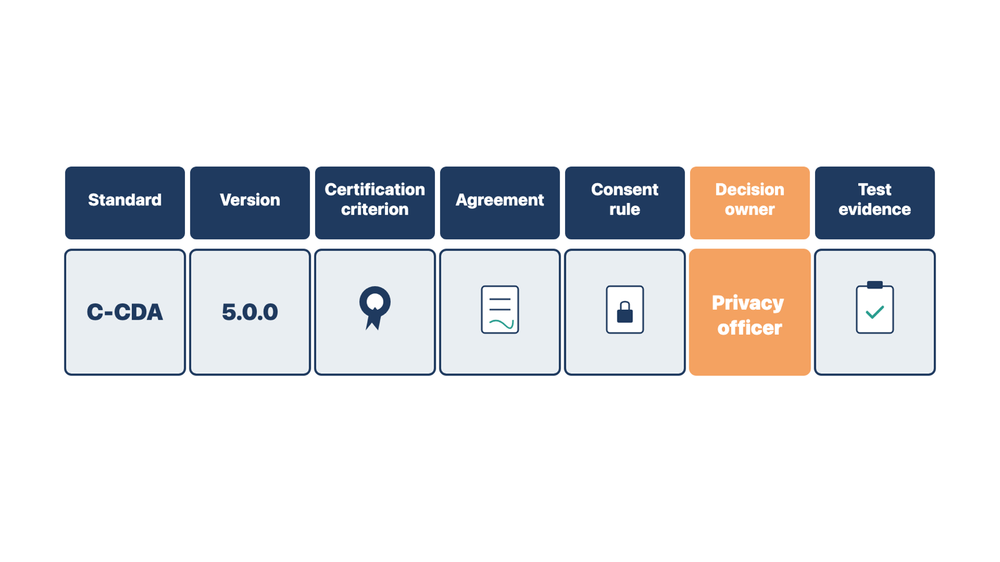

National rules shape how an EHR shares information. A wrong setting can break a federal rule, so you must know who decides, even though you never decide.
Rules change often. Confirm current versions at the start of each project.
ONC Health IT Certification Program. The Office of the National Coordinator for Health Information Technology (ONC) runs this voluntary federal program. Approved bodies test products against published criteria. Certified products appear on the Certified Health IT Product List (CHPL). Programs run by the Centers for Medicare & Medicaid Services (CMS) encourage or require certified technology. Ask the vendor for the product's CHPL listing and the criteria and versions it covers. Then check the listing yourself. Certification shows the product can do certain things. It does not prove the client's setup is correct.
The HTI-1 rule. ONC's HTI-1 (Health Data, Technology, and Interoperability) final rule took effect March 11, 2024. It set USCDI v3 as the certification baseline from January 1, 2026. It added transparency rules for decision support, covered in Module 10. It also revised the information-blocking rules.
Information blocking. The 21st Century Cures Act bans information blocking. This is a practice likely to interfere with access to, exchange of, or use of electronic health information (EHI). A practice is allowed when the law requires it or an exception applies. The rule covers health care providers, developers of certified health IT, and health information networks. Exceptions include preventing harm, privacy, security, infeasibility, and system performance. Providers found to have blocked information can face penalties. Setup choices can raise the question. Examples are delaying results in the patient portal, turning off an export, or refusing an app connection.
TEFCA and QHINs. The Trusted Exchange Framework and Common Agreement (TEFCA) is a nationwide framework for sharing records. Qualified Health Information Networks (QHINs) are the networks that connect to each other under it. Exchange purposes include treatment, payment, operations, public health, benefits decisions, and patient access. A clinic usually joins through its vendor or a network, which means signing agreements.
Payer interoperability rules. CMS rule CMS-0057-F requires some payers, such as Medicare Advantage and Medicaid plans, to build data-sharing and prior authorization APIs. Operational requirements began January 1, 2026. Most API requirements apply from January 1, 2027. The clinic is not the regulated party, but its prior authorization workflow may change.
Who decides:
Record each exchange in an interoperability source register. This is a table with one row per exchange.

Test a clinical exchange this way. Send and receive a CCD for a synthetic patient. Check that each expected item arrived and filed to the right patient. Test a near-match patient, such as the same name with a different birth date. Confirm that a clinician can see where incoming data came from. Confirm the clinician can reconcile medications, allergies, and problems before they join the chart.
Rule: You record, test, and route each sharing question; the client's named leaders decide it.
Compare two cases. A practice manager asks you to hold lab results from the portal for seven days. A physician asks you to turn off the chart export because "patients don't need it." Both requests could be information blocking. In both cases you record the request and route it to the privacy or compliance authority before you change anything.
Check yourself
Claims, payments, and eligibility checks all flow through electronic transactions. If staff read a transaction wrongly, the clinic loses money or works the wrong queue.
A clearinghouse is a company that checks claims and routes them between the clinic and many payers. A clearinghouse link may support eligibility checks, claims, acknowledgements, rejections, and payment details. The exact scope depends on the product, the contracts, and the payers.
Implementation work may include:
You coordinate setup and evidence. Qualified coding, billing, compliance, and finance experts own the decisions in their areas. Do not choose codes. Do not call a claim compliant just because the software accepts it.
Know the standard transactions. HIPAA (the Health Insurance Portability and Accountability Act) requires health plans and providers to use adopted standards when they do these transactions electronically. For most, the standard is ASC X12 (Accredited Standards Committee X12) version 5010. You will see the transaction numbers in vendor screens and clearinghouse reports.
CMS guidance puts it simply. A 999 problem is technical, so it goes to whoever prepares the file. A 277CA problem is a data problem, so billing staff correct it.
Test more than one "clean claim." Include an eligibility failure, missing information, a rejection, correction and resubmission, duplicate prevention, a denial, and an unexpected reply. Then reconcile to the approved financial workflow.
Rule: A 999 checks the file's format; only the 277CA tells you whether each claim was accepted for processing.
Compare two cases. At Cedar Point, a test file of 20 claims returns a 999 "Accepted." Later, the 277CA shows 2 of those claims rejected for a missing provider number. At a pediatric clinic, the 999 reports a format error. That is a technical problem, so it goes to whoever prepares the file. In both cases, you read the 999 for format and wait for the 277CA before you report on any claim.
Check yourself
Rejections and denials need different fixes, different owners, and different deadlines. If one queue holds both, staff appeal claims that were never decided and miss real appeal dates.
Adjudication is the payer's decision on whether, and how much, to pay.
A rejection happens before adjudication. The clearinghouse or the payer's first checks stop the claim because something is missing or invalid. An example is a provider number the payer does not recognize. The claim was never decided. Staff correct it and send it again. A rejection usually shows up on a 277CA or a clearinghouse report.
A denial happens after adjudication. The payer processed the claim and decided not to pay all or part of it. The reason appears on the 835 as adjustment reason codes. Staff work a denial through the payer's corrected-claim, reopening, or appeal process. In Medicare, appeal rights come from the payer's first decision. A rejected claim never got one.

For configuration, this means:
The billing manager decides the queue design, owners, and aging limits. You build and test what is approved.
Rule: Staff fix and resend a rejected claim; they appeal or correct a denied claim through the payer.
Compare two cases. A claim comes back on the 277CA with "rendering provider not on file." A different claim comes back on the 835 with a reason code saying the service is not covered. The first was never decided, so staff fix and resend it. The second was decided, so staff follow the payer's appeal or correction path.
Check yourself